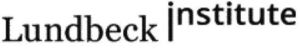

Trade Mark Journal No.2025/025 20 June 2025
WO0000001858073 (5,9,16,38,41,42)
Office of origin: Denmark
Date of International Registration:28 October 2024
Date of designation in the UK:
28 October 2024

International priority date claimed: 8 May 2024
(Denmark)
- Class 5
- Pharmaceutical and medical preparations and substances; pharmaceutical preparations and substances for the prevention and treatment of disorders and diseases in, generated from or acting on the central nervous system; pharmaceutical preparations and substances acting on the central nervous system; central nervous system stimulants; pharmaceutical preparations and substances for the prevention and treatment of psychiatric and neurological disorders and diseases; pharmaceutical preparations and substances for the prevention and treatment of dementia, Alzheimer's disease and disorder, dizziness, seizures, stroke, depression, cognitive impairment, cognitive disorders and diseases, mood swings, psychosis, anxiety, apathy, epilepsy; pharmaceutical preparations and substances for the prevention and treatment of Lennox-Gastaut syndrome (LGS), sclerosis, porphyria, Huntington's disease and disorder, insomnia, Parkinson's disease and disorder, falls, movement disorders and movement disorders, tremor, schizophrenia, bipolar disease and disorder, mania, ADHD, PTSD, agitation, aggression, autism, melancholia, OCD, Tourette's syndrome, progressive supranuclear palsy (PSP), restlessness, akathisia, fatigue, drowsiness, nausea, migraine, pain, alcoholism and addiction; preparations, substances, reagents and agents for diagnostic and medical purposes.
- Class 9
- Electronic publications (downloadable), including books, reports, brochures, booklets, magazines, leaflets, magazines, journals, teaching and training material in research and development, science, disease information, clinical studies, tests and trials, diagnostics, medicine, pharmaceuticals, medical disorders, medical diseases, clinical or medical treatment and prevention; software for medical and pharmaceutical information, education and sales activities; software for the analysis of medical and pharmaceutical information and disease information; software, including application software for mobile devices (app); data processing and communication devices and instruments for information sharing and interaction in research and development, science, clinical studies, tests and trials, diagnostics, medicine, pharmaceuticals, disorders, diseases, treatment and prevention; electronic publications (downloadable) related to magazines, journals, teaching and training material in research and development, science, clinical studies, tests and experiments, diagnostics, medicine, drugs, disorders, diseases, treatment and prevention, downloadable software, including application software for mobile devices (app); software for use in the diagnosis, management, monitoring, assessment, control and investigation of psychiatric and neurological disorders and diseases, dementia, Alzheimer's disorder and disease, dizziness, convulsions, stroke, depression, cognitive impairment, cognitive disorders and diseases, mood disorders, psychosis, anxiety, apathy, epilepsy, Lennox-Gastaut syndrome (LGS), sclerosis, porphyria, Huntington's disorder and disease, insomnia, Parkinson's disorder and disease, falls, movement disorders and diseases, tremor, schizophrenia, bipolar disorder and disease, mania, ADHD, PTSD, agitation, aggression, autism, melancholia, OCD, Tourette syndrome, progressive supranuclear palsy (PSP), restlessness, akathisia, fatigue, somnolence, nausea, migraine, pain, alcoholism and addiction.
- Class 16
- Printed publications, including books, reports, brochures, booklets, magazines, leaflets, magazines, journals, teaching and training materials in the field of research and development, science, clinical studies, tests and trials, diagnostics, medicine, pharmaceuticals, disorders, diseases, treatment and prevention.
- Class 38
- Providing online forums in the fields of medicines, disease awareness and treatments; providing online chat rooms and electronic message boards for the transmission of messages among users in the field of medicines, disease awareness and treatments.
- Class 41
- Educational services, namely conducting seminars in the field of pharmaceutical preparations and disease awareness; provision of education in pharmaceuticals and disease awareness; arranging and conducting seminars, conferences, symposia, training workshops and courses in the field of medicines and disease awareness; educational activities within pharmaceutical research and development, medical clinical examinations, pharmaceutical tests and trials and diagnostic medicine in connection with the treatment and prevention of diseases and disorders; provision of aforementioned services electronically, online, via cable or internet or other electronic media; arranging and conducting expert forums, namely online training programs in the field of pharmaceutical preparations; providing non-downloadable online publications, namely, books, reports, brochures, pamphlets, leaflets, patient information leaflets, magazines, journals, educational and training materials in the field of pharmaceutical research and development, science, medical clinical studies in the field of pharmaceutical testing and trials, diagnostic medicine, drugs, disorders, disease awareness, treatment and prevention related to assessment of cognitive functions; education in the form of providing cognitive function assessment services through non-downloadable on-line screening tools.
- Class 42
- Pharmaceutical research and development; scientific and technological services, namely, scientific testing and research related to medical disorders, medical diseases and medical prevention; scientific and technological services, namely, scientific testing and research related to the central nervous system and central nervous system related disorders, pharmaceutical preparations and disease awareness; medical and clinical research, namely pharmaceutical clinical research and conducting clinical trials for others in the field of pharmaceutical preparations; diagnostic research and testing in pharmaceutical research.
H. Lundbeck A/S